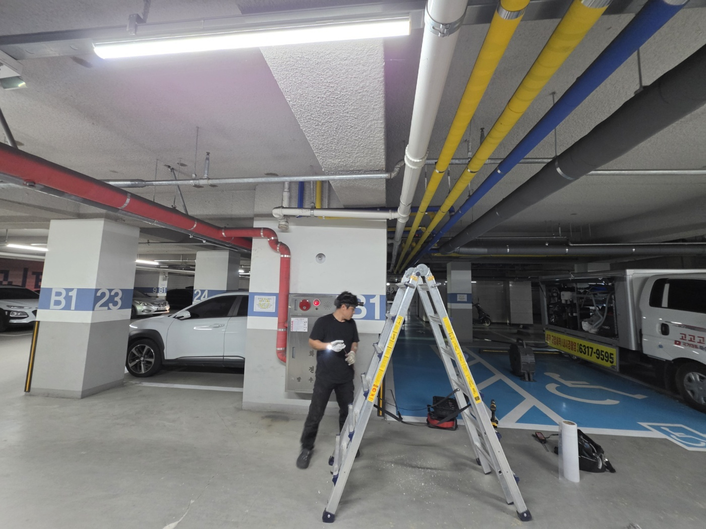
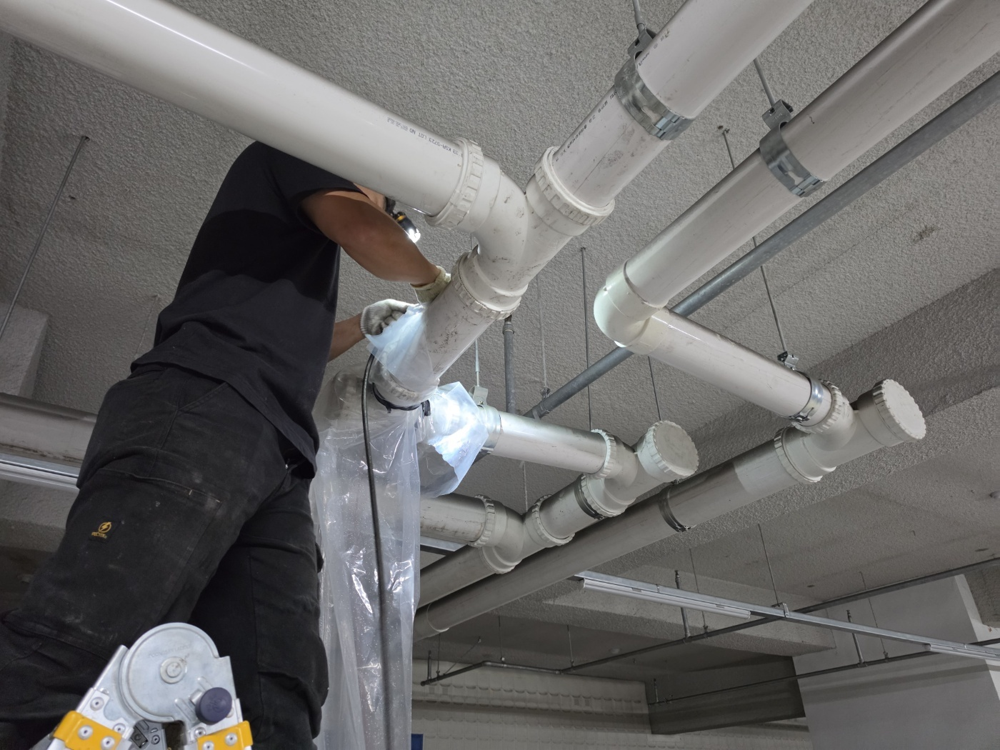
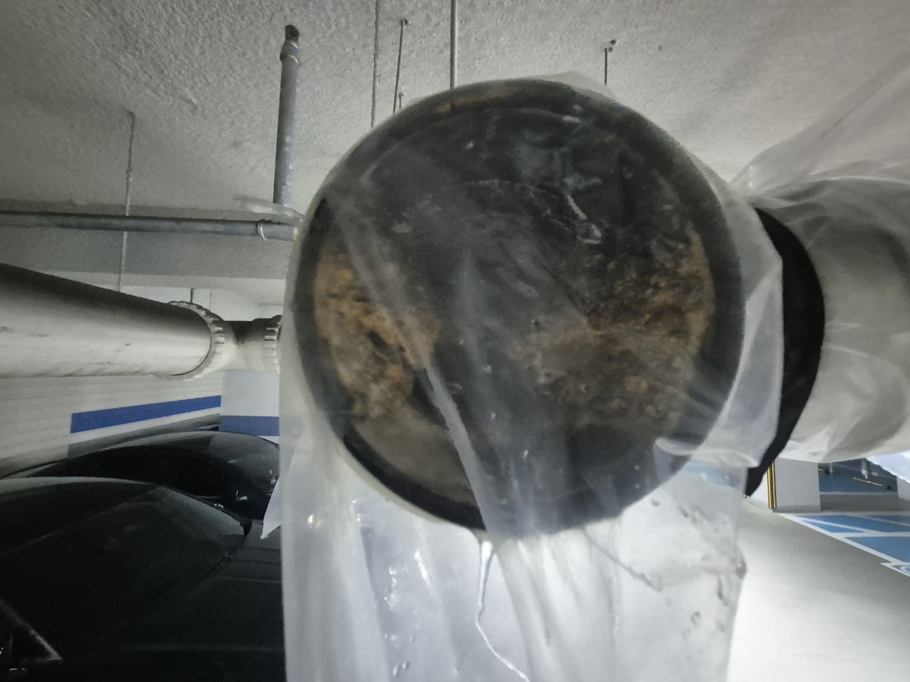
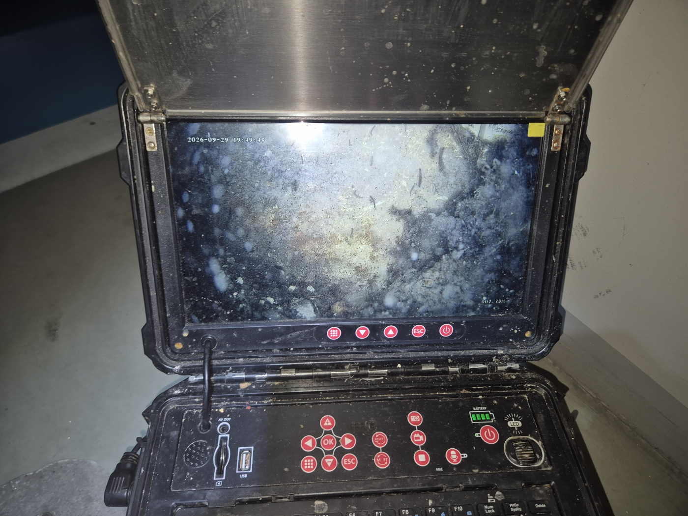
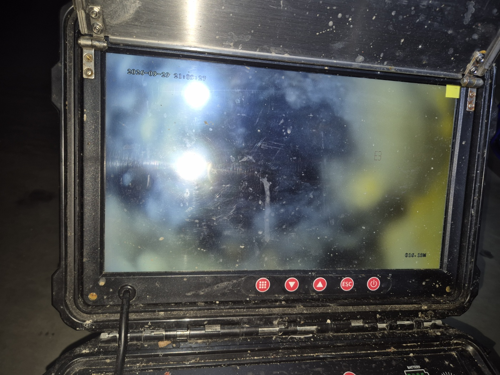
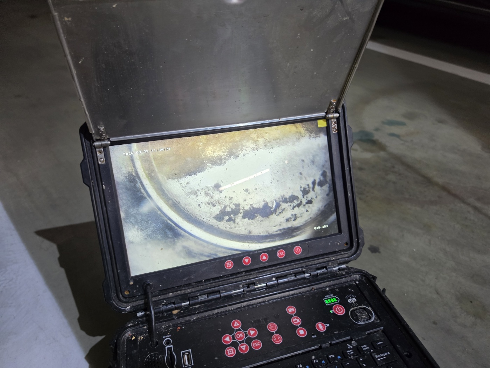

안녕하세요.. 고고고 설비입니다.. 이번에는 천안시 불당동에 있는 원룸 건물에서 화장실 바닥 하수구가 막혔다는 연락을 받고 출동한 현장을 소개해드릴게요. 화장실 한 곳만 문제가 아니라 건물 화장실 바닥 쪽 메인 배관이 막힌 상황이라서, 배관이 지나가는 지하주차장 천장까지 올라가서 작업했습니다.
메인 배관은 건물 지하주차장 천장을 따라 지나가고 있었어요. 파란색, 노란색 배관 사이로 하얀색 하수 배관이 길게 이어져 있더라고요. 먼저 사다리를 세우고 올라가서 어느 위치를 열어서 확인하면 좋을지 살펴봤습니다.

주차장에는 차량이 세워져 있어서 오수가 떨어지면 안 되니까, 배관 아래에 비닐을 넉넉하게 받치고 작업을 시작했어요. 좁은 천장 아래에서 위를 올려다보며 배관을 하나씩 열어가는 작업이라 자세가 불편했지만 꼼꼼하게 진행했습니다.

배관을 열어보니 끝부분에 두꺼운 이물질이 가득 눌어붙어 있었어요. 비닐 안으로 받아낸 걸 보니 이 정도면 화장실 바닥으로 물이 올라올 수밖에 없겠다 싶더라고요.

배관 안쪽은 어떤 상태인지 내시경으로 직접 확인했어요. 모니터에 비친 배관 벽면에는 찌꺼기와 이물질이 층층이 붙어 있었고, 한 군데만 막힌 게 아니라 배관 안쪽 곳곳에 이물질이 쌓여 있는 모습이었습니다.

조금 더 안쪽으로 들어가면서 막힌 위치와 상태를 계속 살폈어요. 어디까지 이물질이 쌓였는지 알아야 필요한 만큼만 정확하게 작업할 수 있거든요.

마지막으로 한 번 더 내시경 화면으로 배관 안쪽 상태를 점검했습니다.

원인이 되는 이물질을 제거해서 화장실 바닥 하수구가 다시 시원하게 내려가도록 해결해드렸습니다. 원룸처럼 여러 세대가 쓰는 건물은 화장실 배관이 메인 배관 하나로 모이기 때문에, 메인이 막히면 한 곳이 아니라 여러 곳에서 물이 올라올 수 있어요. 바닥 배수구에서 물이 천천히 내려가거나 냄새가 올라오면, 완전히 막히기 전에 미리 점검해 보시는 걸 추천드립니다.
고고고 설비는 주택, 아파트, 원룸, 상가, 공장의 생활 하수 오수 배관을 관리해 주는 업체입니다. 고고고 설비에 전화 주시면 친절상담 정확한 진단 확실한 해결로 보답해 드리겠습니다!!